多組K8s叢集管理，需要注意的重點有二件事，第一就是叢集(cluster)切換，不可或缺的工具有kubectx, kubens，有了它們就能輕鬆在多個背景及命名空間之間做轉換。再來
如果你需要更深入轉換整個kubernetes系統時，你可以參考
Rancher是以UI 介面出發來集中管理多重叢集，它可以設定穿越地端與多組雲端託管的kubernetesKQueen是open source 是由Mirantis員工所開發，提供一個共用型的自助式kubernetesGrandener是由SAP公司所開發，多是利用kubernetes 原生API建構
但是身為Google Partner，今天要跟大家介紹Anthos，透過它的跨雲地功能，一樣可以達到多組K8s叢集管理能力，而且裡面整合的Istio，可以供二組以上的叢集共用一個Istio Control plane。
完整架構圖
- 一個完整的購物網站
Hipster Shop服務座落在二個cluster 分別在不同的region - 想要透過同一組的istio去控管二邊的service
- 使用 remote configuration連線到單一個 Control plane(single Istio control plane)
- 實際運作remote Envoy與Control plane溝通，形成Shared control plane
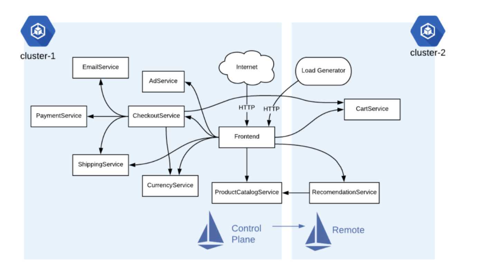
實作目的
- 首先要建立2 GKE clusters 環境
- 建立屬二個 GKE 溝通時的firewall rules ，使二個clusters可以溝通
- 於Cluster 1安裝
Istio control plane - 於Cluster 2安裝
Istio remote - 使 Cluster 2
Istio remote連線至Cluster 1 - 部署 the Hipster Shop multi-service application 在二個Cluster
- 確認 Hipster Shop 服務是否正常運行於二個Cluster
Task 1. Ready 2 GKE Cluster
準二個Cluster
- A GKE cluster, named
cluster-1, in theus-east1region. - A GKE cluster, named
cluster-2, in theus-central1region.
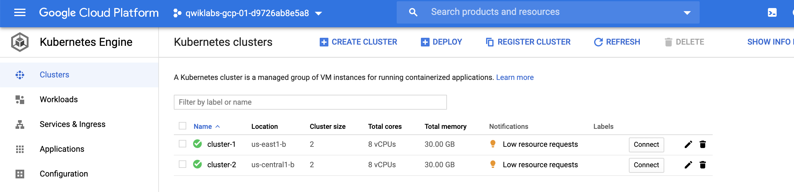
Step1. Get credentials of each GKE
- 要先拿到
credentials方能進入二個Cluster
1 | #1. config cluster-1 |
2 | export CLUSTER1_NAME=cluster-1 |
3 | export CLUSTER1_ZONE=us-east1-b |
4 | |
5 | gcloud container clusters get-credentials $CLUSTER1_NAME \ |
6 | --zone $CLUSTER1_ZONE --project $PROJECT_ID |
7 | |
8 | #2. config cluster-2 |
9 | export CLUSTER2_NAME=cluster-2 |
10 | export CLUSTER2_ZONE=us-central1-b |
11 | |
12 | gcloud container clusters get-credentials $CLUSTER2_NAME \ |
13 | --zone $CLUSTER2_ZONE --project $PROJECT_ID |
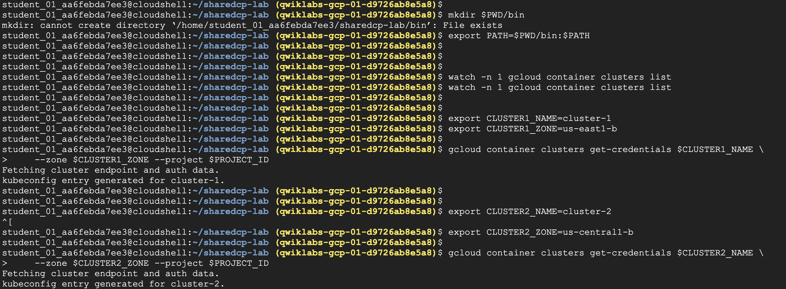
Step2. Check cluster configurations
- check cluster config, 可以看到
- 各別的cluster configurations
- 它們使用的key
- server address
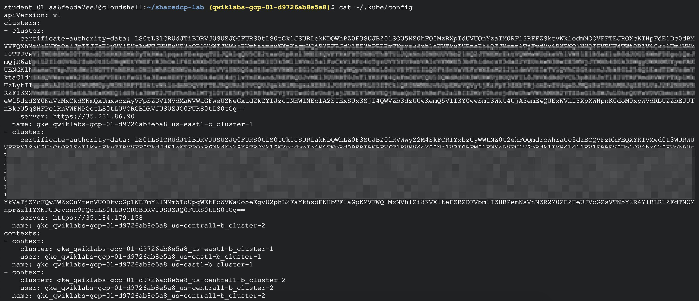
Step3. kubectx
kubectx是 open-source 工具，可讓user可以輕鬆切換多個cluster
好處就是，省去切換或合併[context](Context 在 Kubernetes 裡面，切換不同的 cluster 是以 context 為單位，一個 context 裡面必需要三個元件，分別是 User、Server、Certification。這三個東西說起來也很直觀，有個使用者 (User) 必須要有憑證 (Certification) 才能連到某個 Cluster (Server)。 底下是一個 Context 所包含的內容：)的功夫，所以我們選用這個好用的切換工具- 什麼是
context？
Kubernetes 裡面，切換不同的 cluster 是以 context 為單位，一個 context 裡面必需要三個元件，分別是 User、Server、Certification。這三個東西說起來也很直觀，有個使用者 (User) 必須要有憑證 (Certification) 才能連到某個 Cluster (Server)
1 | #1. Download kubectx |
2 | curl -sLO https://raw.githubusercontent.com/ahmetb/kubectx/master/kubectx |
3 | chmod +x kubectx |
4 | mv ./kubectx ./bin |
5 | |
6 | #2. kubectx read cluster-config |
7 | |
8 | #setup Var for Cluster |
9 | kubectx cluster1=gke_${PROJECT_ID}_${CLUSTER1_ZONE}_${CLUSTER1_NAME} |
10 | kubectx cluster2=gke_${PROJECT_ID}_${CLUSTER2_ZONE}_${CLUSTER2_NAME} |
11 | |
12 | #3. List the kubectx available contexts. |
13 | kubectx |
14 | |
15 | (now is running on cluster2) |
16 | |
17 | #4. Change cluster to cluster1 |
18 | kubectx cluster1 |
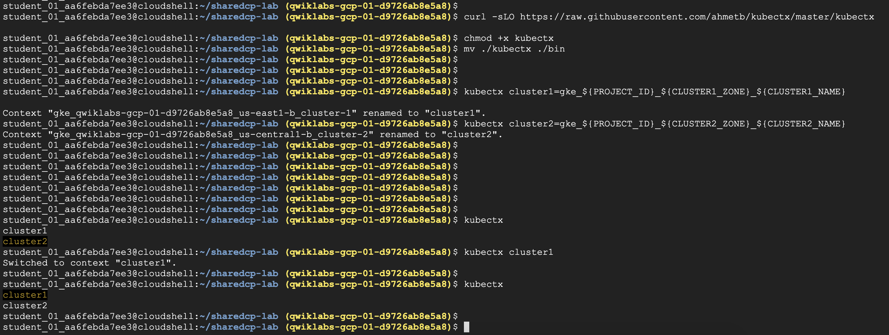
Task 2. Download lab files from a GitHub repo
- 接下來要安裝Google engineers開發的管理Istio工具
- multi-cluster
- shared control-plane
- 完整的
git請至下方查看
https://github.com/GoogleCloudPlatform/istio-samples.git
1 | #1. git clone |
2 | git clone https://github.com/GoogleCloudPlatform/istio-samples.git |
3 | |
4 | cd istio-samples/multicluster-gke/single-control-plane |
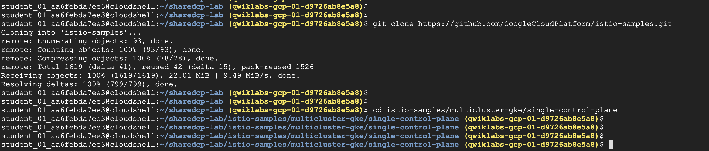
Task 3. Create GKE firewall rules to allow inter-cluster connections
- 打開
firewall使二邊Cluster內的pod 可以互通 - 主要目的，是讓二邊的cluster’s
CIDRblock range 可以打通，最終control plane與remote互通
1 | ./scripts/3-firewall.sh |
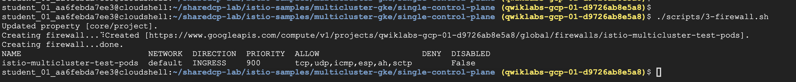
- 檢查
istio-multicluster-test-pods規則 - 有加入Igress 並同意10.16.0.0/14, 10.8.0.0/14 二組ip range
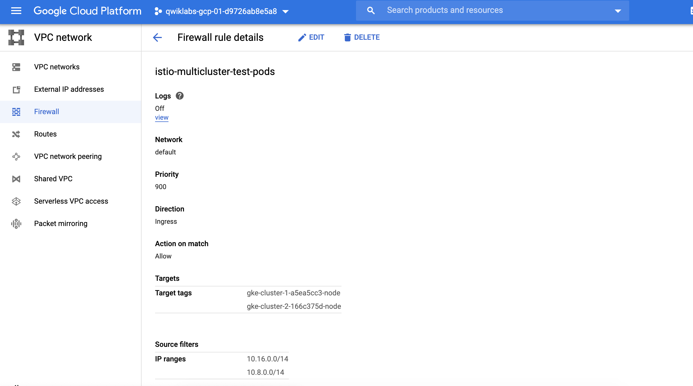
Task 4. Install the Istio control plane to cluster 1
- 在cluster 1安裝Istio control plane，我們要先取得安裝檔
- 因為整個Istio control plane也是以pod型式運行，因此安裝檔會為
yaml為主 - 取得yaml後，使用kubectl apply -f istio_master.yaml 進行部署
1 | #1. Download Istio |
2 | ISTIO_VERSION=${ISTIO_VERSION:=1.4.2} |
3 | curl -L https://git.io/getLatestIstio | ISTIO_VERSION=$ISTIO_VERSION sh - |
4 | |
5 | #2. Use helm to prepare an installation template. |
6 | cat istio-${ISTIO_VERSION}/install/kubernetes/helm/istio-init/files/crd-* \ |
7 | > istio_master.yaml |
8 | |
9 | helm template istio istio-${ISTIO_VERSION}/install/kubernetes/helm/istio \ |
10 | --namespace istio-system >> istio_master.yaml |
11 | |
12 | #3. Switch to cluster1 context. |
13 | kubectx cluster1 |
14 | |
15 | #4. Install Istio using the template, to cluster 1. |
16 | kubectl create ns istio-system |
17 | |
18 | #4.1 Enable auto-proxy injection of Istio sidecars. |
19 | kubectl label namespace default istio-injection=enabled |
20 | |
21 | #4.2 Finally, install the control plane components. |
22 | kubectl apply -f istio_master.yaml |
- 可以看到很多的istio components 被建立起來
- envoy
- attributemainifests
- gateways
- etc.
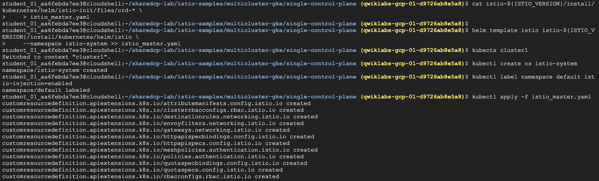
Task 5. Install the Istio remote on cluster 2
Cluster 2不同的地方是要安裝的是
Agnet- 安裝皆是透過
helm - citadel node-agent
- Envoy sidecar injector to cluster 2.
- 安裝皆是透過
需要template file:
istio_remote.yaml來跑control & remote需求之前在remote components裡包含
helm使用的istio_remote.yaml
Step1. Isntall istio-remote by helm in Cluster1
1 | #1. kubectx cluster1 |
2 | kubectx cluster1 |
3 | |
4 | #2 Extract the IPs for the cluster1 Pilot, Mixer (below called policy) |
5 | export PILOT_POD_IP=$(kubectl -n istio-system get pod -l istio=pilot -o jsonpath='{.items[0].status.podIP}') |
6 | export POLICY_POD_IP=$(kubectl -n istio-system get pod -l istio=mixer -o jsonpath='{.items[0].status.podIP}') |
7 | export TELEMETRY_POD_IP=$(kubectl -n istio-system get pod -l istio-mixer-type=telemetry -o jsonpath='{.items[0].status.podIP}') |
8 | |
9 | echo "Pilot: $PILOT_POD_IP" |
10 | echo "Istio-Policy (mixer): $POLICY_POD_IP" |
11 | echo "Istio-Telemetry (mixer): $TELEMETRY_POD_IP" |
12 | |
13 | HELM_DIR="istio-${ISTIO_VERSION}/install/kubernetes/helm/istio" |
14 | |
15 | #3 isntall istio-remote by helm |
16 | helm template istio-remote $HELM_DIR \ |
17 | --namespace istio-system \ |
18 | --values $HELM_DIR/values-istio-remote.yaml \ |
19 | --set global.remotePilotAddress=${PILOT_POD_IP} \ |
20 | --set global.remotePolicyAddress=${POLICY_POD_IP} \ |
21 | --set global.remoteTelemetryAddress=${TELEMETRY_POD_IP} > \ |
22 | istio_remote.yaml |
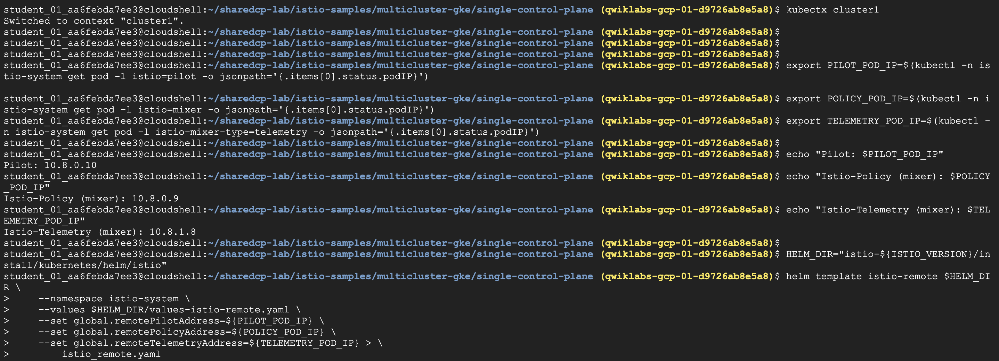
Step2. Install Istio remote components in Cluster2
- 記得要透過
kubectx切換至cluster2 - 當然啦，也要建立專屬istio-system 使用的
namespace
1 | #1. Install Istio remote components using the template, to cluster 2. |
2 | |
3 | kubectx cluster2 |
4 | kubectl create ns istio-system |
5 | kubectl apply -f istio_remote.yaml |
6 | |
7 | #2. Enable auto-proxy injection of Istio sidecars. |
8 | kubectl label namespace default istio-injection=enabled |
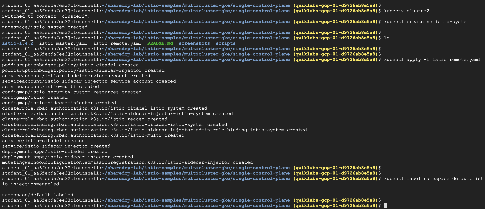
Task 6. Connect cluster 2 to cluster 1
- cluster1 目前還未經設定，允許
cluster2進行通訊 - 所以我們要針對
remote Cluster 2，產生一個 Kubeconfig file ，然後把Secret加到Cluster 1 - 設定變數描述Cluster2的環境，包含以下
- name, kubecfg file, server address, istio namespace, istio service account, service account secret name, the CA cert, and token.
Step1. Generate kubeconfig for Cluster2
1 | #1. Verify that you're currently using the cluster2 context. |
2 | |
3 | kubectx cluster2 |
4 | |
5 | #2. Set up multiple environment variables describing cluster2, including the name, etc. |
6 | export WORK_DIR=$(pwd) |
7 | CLUSTER_NAME=$(kubectl config view --minify=true -o "jsonpath={.clusters[].name}") |
8 | CLUSTER_NAME="${CLUSTER_NAME##*_}" |
9 | |
10 | export KUBECFG_FILE=${WORK_DIR}/${CLUSTER_NAME} |
11 | SERVER=$(kubectl config view --minify=true -o "jsonpath={.clusters[].cluster.server}") |
12 | NAMESPACE=istio-system |
13 | SERVICE_ACCOUNT=istio-multi |
14 | SECRET_NAME=$(kubectl get sa ${SERVICE_ACCOUNT} -n ${NAMESPACE} -o jsonpath='{.secrets[].name}') |
15 | CA_DATA=$(kubectl get secret ${SECRET_NAME} -n ${NAMESPACE} -o "jsonpath={.data['ca\.crt']}") |
16 | TOKEN=$(kubectl get secret ${SECRET_NAME} -n ${NAMESPACE} -o "jsonpath={.data['token']}" | base64 --decode) |
17 | |
18 | #3. Create a new kubeconfig |
19 | # for cluster 2 named cluster-2 using the environment variables. |
20 | |
21 | cat <<EOF > ${KUBECFG_FILE} |
22 | apiVersion: v1 |
23 | clusters: |
24 | - cluster: |
25 | certificate-authority-data: ${CA_DATA} |
26 | server: ${SERVER} |
27 | name: ${CLUSTER_NAME} |
28 | contexts: |
29 | - context: |
30 | cluster: ${CLUSTER_NAME} |
31 | user: ${CLUSTER_NAME} |
32 | name: ${CLUSTER_NAME} |
33 | current-context: ${CLUSTER_NAME} |
34 | kind: Config |
35 | preferences: {} |
36 | users: |
37 | - name: ${CLUSTER_NAME} |
38 | user: |
39 | token: ${TOKEN} |
40 | EOF |
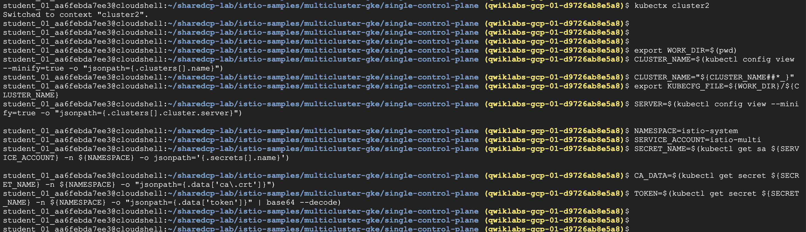
Step2. Let cluster1, the control plane, know about cluster2, the remote.
- 上面已經為了雙cluster溝通，打通
firewall - 現在要為彼此溝通的Auth，製作
secretsecret包含cluster-2 ‘kubeconfig’
1 | #1. Switch to the cluster1 context. |
2 | kubectx cluster1 |
3 | |
4 | #2. Let cluster1, the control plane, know about cluster2, the remote. |
5 | |
6 | kubectl create secret generic ${CLUSTER_NAME} --from-file ${KUBECFG_FILE} -n ${NAMESPACE} |
7 | kubectl label secret ${CLUSTER_NAME} istio/multiCluster=true -n ${NAMESPACE} |
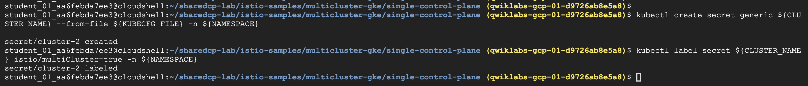
Task 7. Deploy the Hipster Shop multi-service application
- 上面的步聚，都是準備Cluster，現在以下才是重頭戲
- 要把
Hipster Shop整個microservices部在二個Cluster裡面 - 然後運行統一個cluster 1 control plane，如圖所示
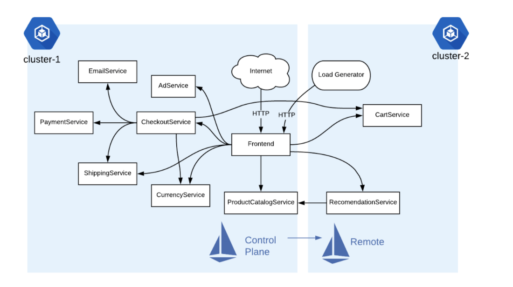
- 看一下部署在cluseter1 的service 1內容
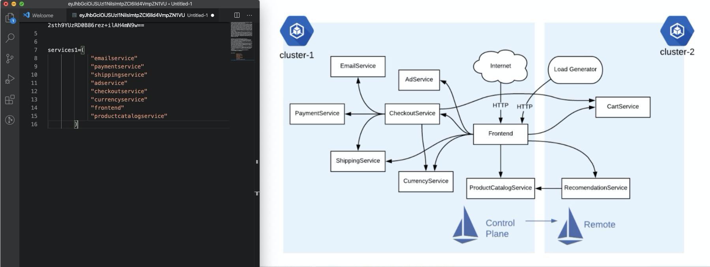
- 再來為什麼要做remove，是因為我們要完成二個cluster的部署
- 因此還需要切換至cluster 2, 把原本cluster 1已存在的
pod移除- oadgenerator
- cartservice
- recommendationservice
- redis-cart
1 | #1. Switch to cluster1 context. |
2 | kubectx cluster1 |
3 | |
4 | #2. Deploy all the Hipster Shop services to cluster 1: |
5 | kubectl apply -f https://raw.githubusercontent.com/GoogleCloudPlatform/microservices-demo/master/release/kubernetes-manifests.yaml |
6 | |
7 | #3. Remove the deployments assigned to cluster 2: |
8 | services2=("loadgenerator" "cartservice" "recommendationservice" "redis-cart") |
9 | for s in "${services2[@]}"; do kubectl delete deployment $s; done; |
切換至GKE workload，可以看到Hipster Shop分部在cluster1, 2
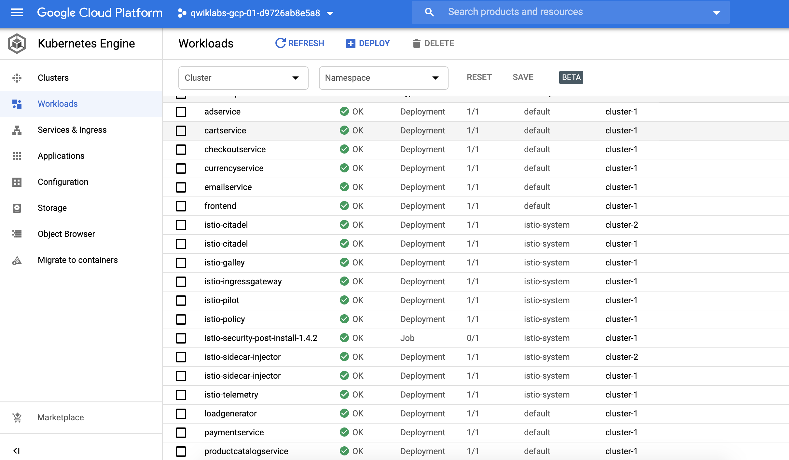
Step2. Cluster2 deploy & delete service
- 切換至
cluster2，開始部署Hipster Shop pods - 同樣的也要把重復的pod，從cluster移除
1 | #4. Switch to cluster2 context. |
2 | kubectx cluster2 |
3 | |
4 | #5. Deploy all the Hipster Shop services to cluster 2: |
5 | kubectl apply -f https://raw.githubusercontent.com/GoogleCloudPlatform/microservices-demo/master/release/kubernetes-manifests.yaml |
6 | |
7 | #6. Remove the deployments assigned to cluster 1: |
8 | services1=("emailservice" "paymentservice" "shippingservice" "adservice" "checkoutservice" "currencyservice" "frontend" "productcatalogservice") |
9 | for s in "${services1[@]}"; do kubectl delete deployment $s; done; |
建立
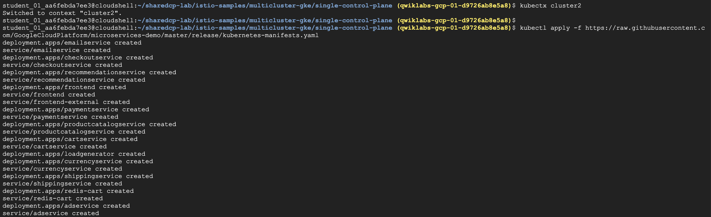
移除
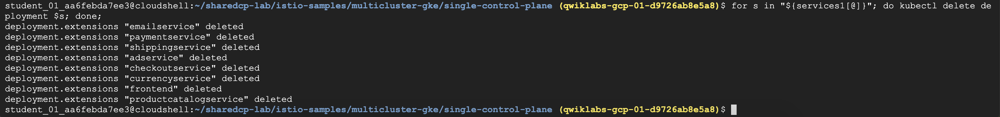
Task 8. Verify the Hipster Shop deployment
- 確認Hipster Shop部署，各別切換至cluster1, 2
Step1. Verify pod in each cluster
1 | #1. Switch to cluster1 context. |
2 | kubectx cluster1 |
3 | |
4 | #2. Check cluster 1 to ensure all pods are RUNNING and READY. |
5 | kubectl get pods |
6 | |
7 | #3. Switch to cluster2 context. |
8 | kubectx cluster2 |
9 | |
10 | #4. Check pods on cluster 2 to ensure all pods are RUNNING and READY. |
11 | kubectl get pods |
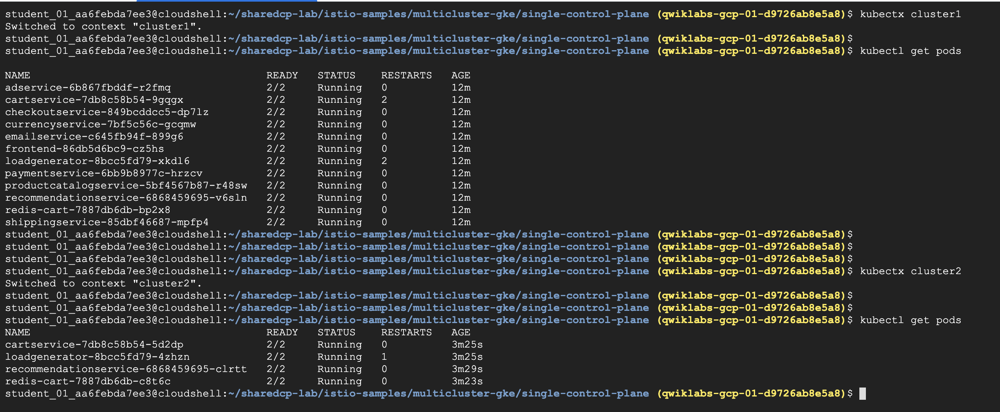
Step2. Check the Envoy proxies running on both clusters
- 重點來了，我們要依據先前架構圖設計，Control plane僅在cluster-1
- 使用
./istio-*/bin/istioctl進行測試- 因此，可以看得到
istioctl proxy-status只有在cluster-1 - 如果跳進cluster-2看
istioctl proxy-status是會顯示錯誤
- 因此，可以看得到
1 | #1. Switch to cluster1 context. |
2 | kubectx cluster1 |
3 | |
4 | #2. Check the proxies, from cluster 1, where the control plane runs. |
5 | ./istio-*/bin/istioctl proxy-status |
istioctl僅能在 cluser-1正常運作- cluser-2則否
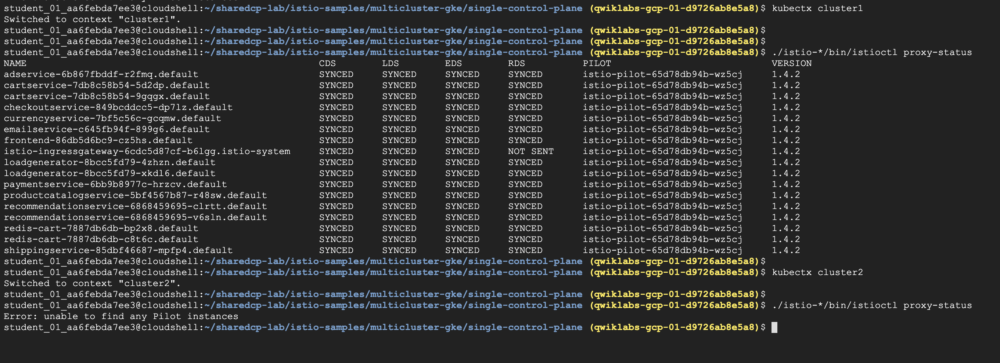
Task 9. Use Hipster Shop services running across multiple clusters
- 現在已經完整雙cluster, 且有一個control-plane托管二座cluster istio系統
- 同時網站運行也是正常的，到此實作也算是完成
1 | #1. Switch to cluster1 context. |
2 | kubectx cluster1 |
3 | |
4 | #2. Get the Istio IngressGateway's EXTERNAL-IP. |
5 | kubectl get svc istio-ingressgateway -n istio-system |
6 | |
7 | #3. Browse Hipster Shop home page, at http://[EXTERNAL_IP]. |
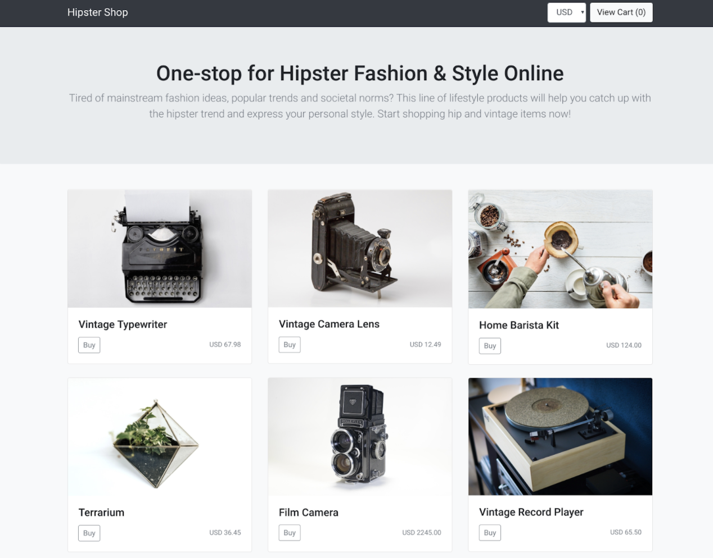
Task10: Register Cluster to Anthos
- 最後，可以將二個cluster加入Anthos Service Mesh(ASM)
- 加入的方法很簡單，僅需點選
REGISTER
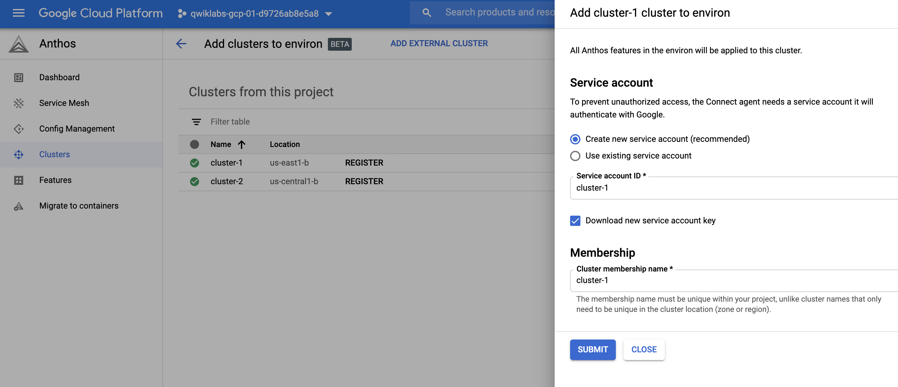
加入時，設定與過程
- 建立service account
- 安裝與設定agent
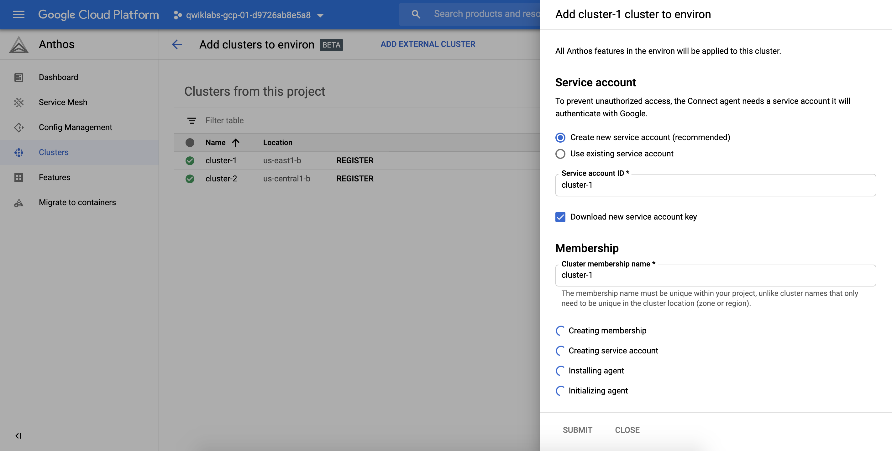
同樣的步驟也把 cluster-2 加入ASM
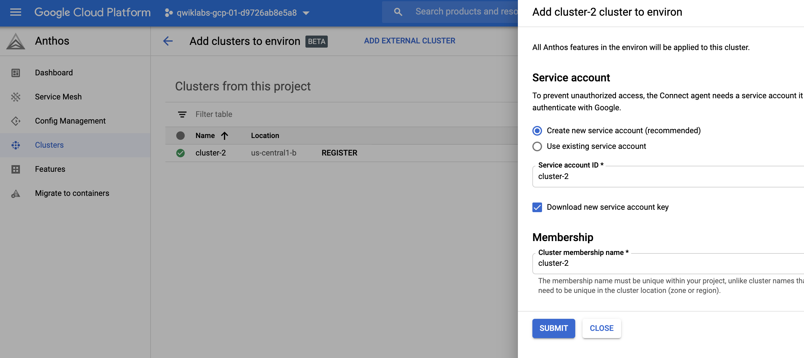
最後就可以享有ASM管理，lab過長，先以提供示意圖
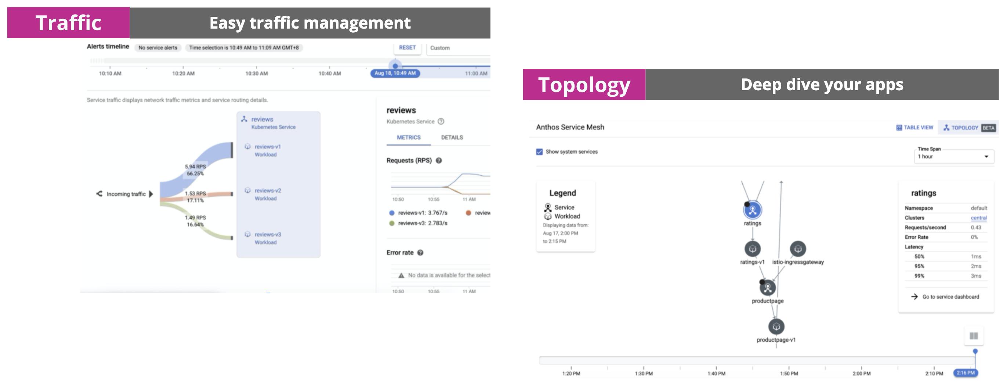
結論
這個實作，完成2 GKE clusters運行在不同的regions，且使用統一個service mesh，透過cluster-1 control-plane托管。這樣的應用，非常適合實際production的環境，因為我們常講Globally deployment，概念包含的docker registry, node, pod separately，相信不久大家也會把istio centralized 加入Globally 運行一個重要的best practice。
Reference
- 管理多個 Kubernetes Cluster：建立、切換、合併 context
- Google Anthos Lab